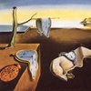

Nel film di Bunuel e Dalì "Un chien Andalou" si può vedere il rifiuto della "bella forma", dell'estetismo del cinema d'autore, il ricorso a immagini banali, quotidiane, a volte mal fotografate, la "poetica del brutto" come alternativa e opposizione all'arte e alla cultura tradizionalmente borghesi. Questo saggio di montaggio formalmente corretto altro non è se non l'attuazione filmica della parola d'ordine surrealista: "squarciare il tamburo della ragione raziocinante e contemplare tale buco".
Nel film si può individuare la stretta parentela tra il procedimento cinematografico e quello pittorico, nel rispetto delle procedure specifiche delle due arti: la pittura realizza l'incongruità e lo shock dell'accostamento agendo essenzialmente su una sintassi spaziale (simultaneità), mentre il cinema realizza lo stesso effetto agendo su una sintassi basata sulla successività.
Il prologo di Bunuel e Dalì , infatti si apre con l'immagine di un uomo che guarda in cielo una luna velata da una piccola nube. In una rapida successione si vede l'immagine della nuvola che "taglia" in due il tondo della luna e quella di un rasoio che, manovrato dall'uomo, squarcia l'occhio di una donna. Questo segmento di film è contornato da una didascalia iniziale (C'era una volta) e una finale (Otto anni dopo) che sembrano definire dei parametri temporali secondo i canoni del cinema narrativo.
In realtà il procedimento è lo stesso dei quadri di Dalì o Magritte. Lì una organizzazione dello spazio rispettosa delle leggi della prospettiva e un'esecuzione accademicamente virtuosistica (Dalì) o scolasticamente corretta (Magritte) sorreggono ed esibiscono accostamenti e incongruenze di ogni tipo, con effetti di shock e di spaesamento ironico o inquietante. In questa sequenza del film, una sintassi filmicamente corretta (didascalie per la temporalità, presentazione dei personaggi, paesaggio) sorregge ed esibisce un'incongruenza programmatica.
Nelle sue opere infatti, René Magritte riesce a creare una realtà più analitica, più "reale" del reale (già quindi surreale), diversa da quella che siamo abituati a conoscere, semplicemente traslando singole parti di banali oggetti e persone da un luogo all'altro. La sua pittura è precisa, meticolosa, ma proprio questa esattezza veristica, supera la capacità visiva dell'occhio umano e coglie la realtà in sintesi. Egli crea l'inquietudine con effetti di "spostamento": ciascuno dei suoi quadri è di apparenza e di disposizione strettamente realistiche, salvo che certi elementi sono spostati, quel tanto che basti a suscitare la sorpresa dello.
Anche nella pittura di Salvador Dalì si riscontra la minuzia ossessiva nella rappresentazione di ogni oggetto, ma egli compOne insieme immagini reali per collocarle in posizioni irreali e deformarle innaturalisticamente. Pur sfiorando spesso il virtuosismo accademico, il pittore trasmette qualcosa in più di un semplice gioco meccanico di immagini. Si ha, fondamentalmente, un autentico surrealismo, cioè la trascrizione poetica della realtà interiore quale appare liberandosi non soltanto da quella esteriore ma soprattutto dai condizionamenti della ragione.
|  |